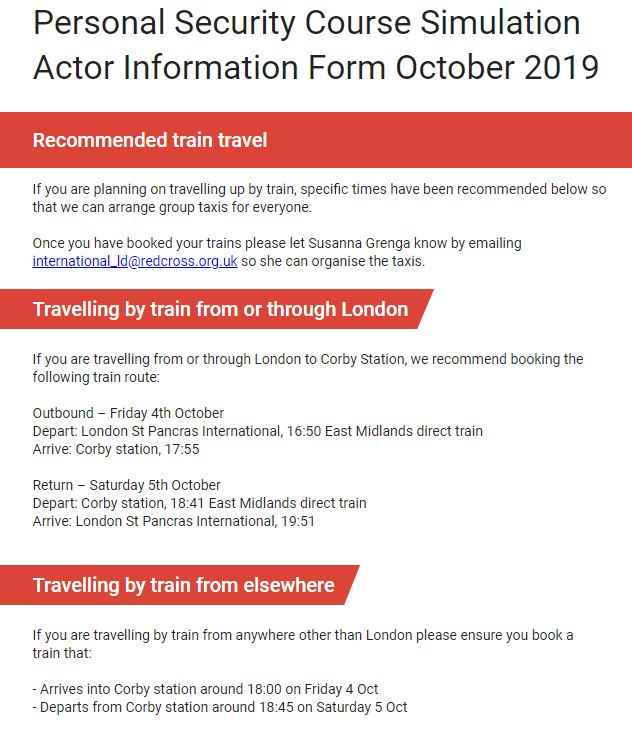

Insight Four: Having effective SOPs and contingency plans helped achieve an effective response

Kenya Red Cross had worked with IFRC to put together a plan of action in 2015; this plan provided a basis for the 2016/17 response, and allowed for quick planning and resource mobilization.
Kenya Red Cross branches in Arid and Semi-Arid Lands (ASALs), developed county contingency plans with county governments, in preparation for the forecasted drought, which allowed them to respond faster and more effectively.
In early 2016, KRCS prepared for drought through capacity building of the RCAT and National Disaster Response Team (NDRT). Training included conducting rapid assessments using the Kenya Inter-Agency Rapid Assessment (KIRA) tool, monitoring of drought situations and putting in place contingency plans. The KRCS developed the response tools; Document Management Framework (the hierarchy of documents); SoPs for drought and RCAT guidelines. These were critical during response, making response organized and well-coordinated.